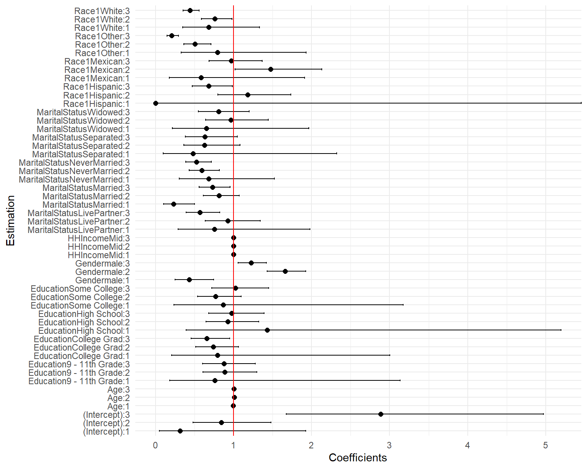
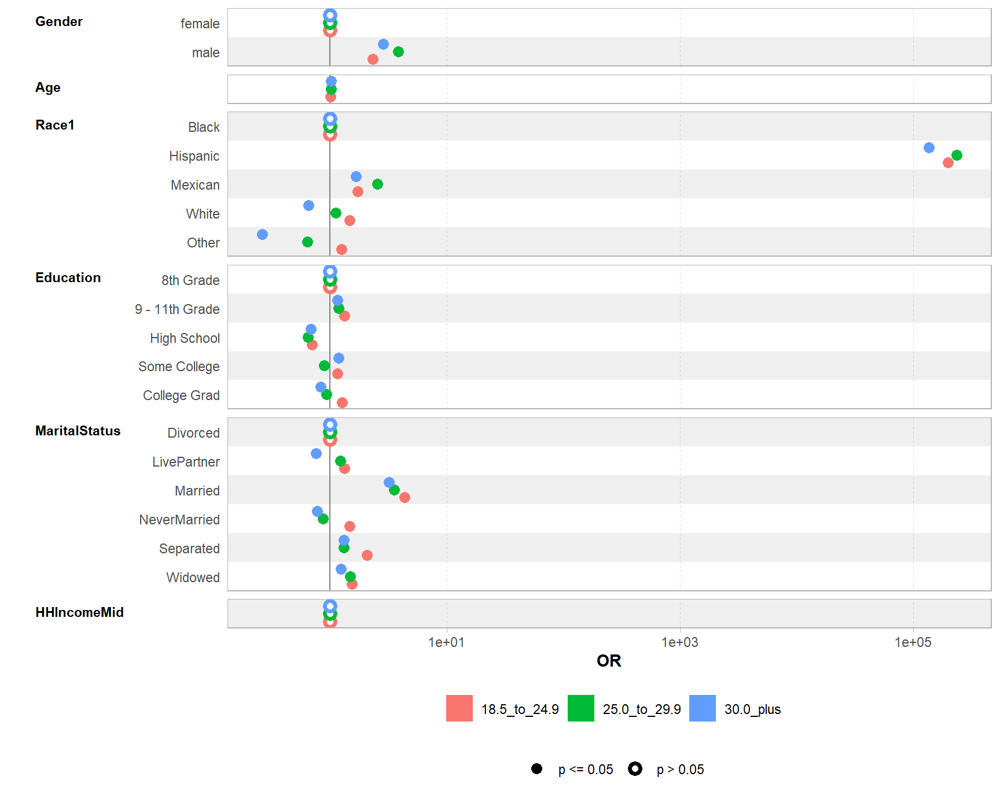
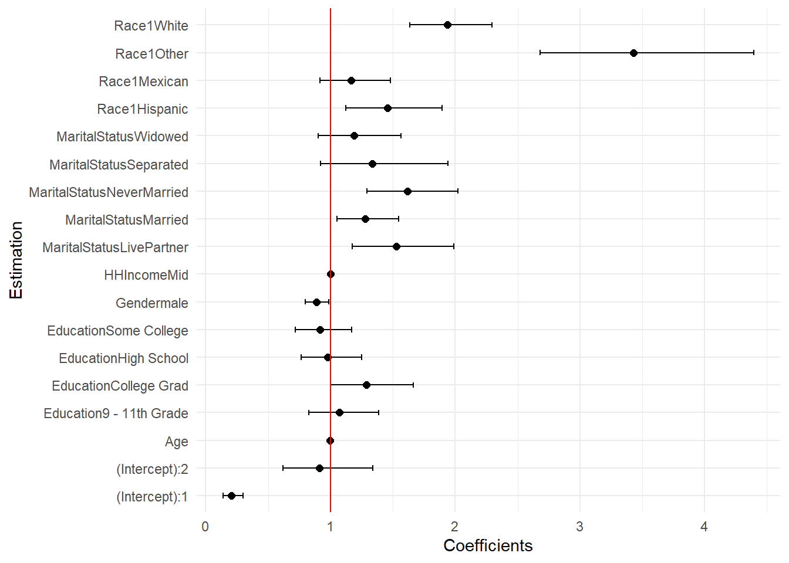

library(tidyverse)
library(gtsummary)
library(broom)
library(questionr)
library(VGAM)
library(knitr)
library(car)9 Régressions multinomiales et ordinales
9.1 Import des données
Pour cette séance, nous allons utiliser le jeu de données NHANES disponible dans le package du même nom.
Il s’agit de données de santé provenant de l’enquête américaine National Health and Nutrition Examination Survey (NHANES). Il contient des données sociale, comportementales et de santé.
Une description des données est disponible dans le descriptif du package lien
library(NHANES)
data("NHANES")
dim(NHANES)[1] 10000 76kable(head(NHANES))| ID | SurveyYr | Gender | Age | AgeDecade | AgeMonths | Race1 | Race3 | Education | MaritalStatus | HHIncome | HHIncomeMid | Poverty | HomeRooms | HomeOwn | Work | Weight | Length | HeadCirc | Height | BMI | BMICatUnder20yrs | BMI_WHO | Pulse | BPSysAve | BPDiaAve | BPSys1 | BPDia1 | BPSys2 | BPDia2 | BPSys3 | BPDia3 | Testosterone | DirectChol | TotChol | UrineVol1 | UrineFlow1 | UrineVol2 | UrineFlow2 | Diabetes | DiabetesAge | HealthGen | DaysPhysHlthBad | DaysMentHlthBad | LittleInterest | Depressed | nPregnancies | nBabies | Age1stBaby | SleepHrsNight | SleepTrouble | PhysActive | PhysActiveDays | TVHrsDay | CompHrsDay | TVHrsDayChild | CompHrsDayChild | Alcohol12PlusYr | AlcoholDay | AlcoholYear | SmokeNow | Smoke100 | Smoke100n | SmokeAge | Marijuana | AgeFirstMarij | RegularMarij | AgeRegMarij | HardDrugs | SexEver | SexAge | SexNumPartnLife | SexNumPartYear | SameSex | SexOrientation | PregnantNow |
|---|---|---|---|---|---|---|---|---|---|---|---|---|---|---|---|---|---|---|---|---|---|---|---|---|---|---|---|---|---|---|---|---|---|---|---|---|---|---|---|---|---|---|---|---|---|---|---|---|---|---|---|---|---|---|---|---|---|---|---|---|---|---|---|---|---|---|---|---|---|---|---|---|---|---|---|
| 51624 | 2009_10 | male | 34 | 30-39 | 409 | White | NA | High School | Married | 25000-34999 | 30000 | 1.36 | 6 | Own | NotWorking | 87.4 | NA | NA | 164.7 | 32.22 | NA | 30.0_plus | 70 | 113 | 85 | 114 | 88 | 114 | 88 | 112 | 82 | NA | 1.29 | 3.49 | 352 | NA | NA | NA | No | NA | Good | 0 | 15 | Most | Several | NA | NA | NA | 4 | Yes | No | NA | NA | NA | NA | NA | Yes | NA | 0 | No | Yes | Smoker | 18 | Yes | 17 | No | NA | Yes | Yes | 16 | 8 | 1 | No | Heterosexual | NA |
| 51624 | 2009_10 | male | 34 | 30-39 | 409 | White | NA | High School | Married | 25000-34999 | 30000 | 1.36 | 6 | Own | NotWorking | 87.4 | NA | NA | 164.7 | 32.22 | NA | 30.0_plus | 70 | 113 | 85 | 114 | 88 | 114 | 88 | 112 | 82 | NA | 1.29 | 3.49 | 352 | NA | NA | NA | No | NA | Good | 0 | 15 | Most | Several | NA | NA | NA | 4 | Yes | No | NA | NA | NA | NA | NA | Yes | NA | 0 | No | Yes | Smoker | 18 | Yes | 17 | No | NA | Yes | Yes | 16 | 8 | 1 | No | Heterosexual | NA |
| 51624 | 2009_10 | male | 34 | 30-39 | 409 | White | NA | High School | Married | 25000-34999 | 30000 | 1.36 | 6 | Own | NotWorking | 87.4 | NA | NA | 164.7 | 32.22 | NA | 30.0_plus | 70 | 113 | 85 | 114 | 88 | 114 | 88 | 112 | 82 | NA | 1.29 | 3.49 | 352 | NA | NA | NA | No | NA | Good | 0 | 15 | Most | Several | NA | NA | NA | 4 | Yes | No | NA | NA | NA | NA | NA | Yes | NA | 0 | No | Yes | Smoker | 18 | Yes | 17 | No | NA | Yes | Yes | 16 | 8 | 1 | No | Heterosexual | NA |
| 51625 | 2009_10 | male | 4 | 0-9 | 49 | Other | NA | NA | NA | 20000-24999 | 22500 | 1.07 | 9 | Own | NA | 17.0 | NA | NA | 105.4 | 15.30 | NA | 12.0_18.5 | NA | NA | NA | NA | NA | NA | NA | NA | NA | NA | NA | NA | NA | NA | NA | NA | No | NA | NA | NA | NA | NA | NA | NA | NA | NA | NA | NA | NA | NA | NA | NA | 4 | 1 | NA | NA | NA | NA | NA | NA | NA | NA | NA | NA | NA | NA | NA | NA | NA | NA | NA | NA | NA |
| 51630 | 2009_10 | female | 49 | 40-49 | 596 | White | NA | Some College | LivePartner | 35000-44999 | 40000 | 1.91 | 5 | Rent | NotWorking | 86.7 | NA | NA | 168.4 | 30.57 | NA | 30.0_plus | 86 | 112 | 75 | 118 | 82 | 108 | 74 | 116 | 76 | NA | 1.16 | 6.70 | 77 | 0.094 | NA | NA | No | NA | Good | 0 | 10 | Several | Several | 2 | 2 | 27 | 8 | Yes | No | NA | NA | NA | NA | NA | Yes | 2 | 20 | Yes | Yes | Smoker | 38 | Yes | 18 | No | NA | Yes | Yes | 12 | 10 | 1 | Yes | Heterosexual | NA |
| 51638 | 2009_10 | male | 9 | 0-9 | 115 | White | NA | NA | NA | 75000-99999 | 87500 | 1.84 | 6 | Rent | NA | 29.8 | NA | NA | 133.1 | 16.82 | NA | 12.0_18.5 | 82 | 86 | 47 | 84 | 50 | 84 | 50 | 88 | 44 | NA | 1.34 | 4.86 | 123 | 1.538 | NA | NA | No | NA | NA | NA | NA | NA | NA | NA | NA | NA | NA | NA | NA | NA | NA | NA | 5 | 0 | NA | NA | NA | NA | NA | NA | NA | NA | NA | NA | NA | NA | NA | NA | NA | NA | NA | NA | NA |
Dans ces données il semble y avoir des doublons. Nous allons les supprimer en utilisant la fonction distinct() de dplyr. Cette fonction ne garde qu’une ligne pour un groupe de lignes qui sont absolument identiques
NHANES <- NHANES %>% distinct()
dim(NHANES)[1] 7832 76Nous sommes passés de 10000 à 7155 observations
Résumé des données
summary(NHANES) ID SurveyYr Gender Age AgeDecade
Min. :51624 2009_10:3568 female:3943 Min. : 0.00 0-9 :1212
1st Qu.:57388 2011_12:4264 male :3889 1st Qu.:16.00 10-19 :1142
Median :62914 Median :35.00 30-39 :1038
Mean :62369 Mean :35.97 20-29 :1023
3rd Qu.:67408 3rd Qu.:54.00 40-49 :1010
Max. :71915 Max. :80.00 (Other):2124
NA's : 283
AgeMonths Race1 Race3 Education
Min. : 0.0 Black :1073 Asian : 281 8th Grade : 397
1st Qu.:169.0 Hispanic: 538 Black : 563 9 - 11th Grade: 712
Median :387.0 Mexican : 920 Hispanic: 317 High School :1131
Mean :403.1 White :4626 Mexican : 451 Some College :1695
3rd Qu.:615.0 Other : 675 White :2510 College Grad :1534
Max. :959.0 Other : 142 NA's :2363
NA's :4271 NA's :3568
MaritalStatus HHIncome HHIncomeMid Poverty
Divorced : 516 more 99999 :1588 Min. : 2500 Min. :0.000
LivePartner : 438 75000-99999: 809 1st Qu.: 22500 1st Qu.:1.130
Married :2940 25000-34999: 784 Median : 50000 Median :2.400
NeverMarried:1048 35000-44999: 691 Mean : 54862 Mean :2.664
Separated : 148 45000-54999: 596 3rd Qu.: 87500 3rd Qu.:4.500
Widowed : 384 (Other) :2711 Max. :100000 Max. :5.000
NA's :2358 NA's : 653 NA's :653 NA's :578
HomeRooms HomeOwn Work Weight
Min. : 1.000 Own :4845 Looking : 244 Min. : 2.80
1st Qu.: 5.000 Rent :2753 NotWorking:2290 1st Qu.: 54.35
Median : 6.000 Other: 184 Working :3376 Median : 71.60
Mean : 6.173 NA's : 50 NA's :1922 Mean : 69.67
3rd Qu.: 7.000 3rd Qu.: 87.90
Max. :13.000 Max. :230.70
NA's :54 NA's :61
Length HeadCirc Height BMI
Min. : 47.10 Min. :34.20 Min. : 83.6 Min. :12.88
1st Qu.: 75.15 1st Qu.:39.50 1st Qu.:155.8 1st Qu.:21.40
Median : 87.05 Median :41.30 Median :165.4 Median :25.83
Mean : 84.89 Mean :41.10 Mean :160.9 Mean :26.52
3rd Qu.: 95.80 3rd Qu.:42.98 3rd Qu.:173.9 3rd Qu.:30.64
Max. :112.20 Max. :45.40 Max. :200.4 Max. :81.25
NA's :7334 NA's :7750 NA's :317 NA's :327
BMICatUnder20yrs BMI_WHO Pulse BPSysAve
UnderWeight: 47 12.0_18.5 :1070 Min. : 40.00 Min. : 76.0
NormWeight : 709 18.5_to_24.9:2261 1st Qu.: 66.00 1st Qu.:106.0
OverWeight : 180 25.0_to_29.9:2067 Median : 72.00 Median :116.0
Obese : 197 30.0_plus :2081 Mean : 73.58 Mean :118.1
NA's :6699 NA's : 353 3rd Qu.: 82.00 3rd Qu.:127.0
Max. :136.00 Max. :226.0
NA's :1236 NA's :1246
BPDiaAve BPSys1 BPDia1 BPSys2
Min. : 0.00 Min. : 72 Min. : 0.0 Min. : 76.0
1st Qu.: 60.00 1st Qu.:106 1st Qu.: 60.0 1st Qu.:106.0
Median : 68.00 Median :116 Median : 68.0 Median :116.0
Mean : 67.03 Mean :119 Mean : 67.9 Mean :118.4
3rd Qu.: 76.00 3rd Qu.:128 3rd Qu.: 76.0 3rd Qu.:128.0
Max. :116.00 Max. :232 Max. :118.0 Max. :226.0
NA's :1246 NA's :1497 NA's :1497 NA's :1404
BPDia2 BPSys3 BPDia3 Testosterone
Min. : 0.00 Min. : 76.0 Min. : 0.00 Min. : 0.25
1st Qu.: 60.00 1st Qu.:106.0 1st Qu.: 60.00 1st Qu.: 17.53
Median : 68.00 Median :116.0 Median : 68.00 Median : 40.69
Mean : 67.19 Mean :117.9 Mean : 66.83 Mean : 193.72
3rd Qu.: 76.00 3rd Qu.:126.0 3rd Qu.: 76.00 3rd Qu.: 352.32
Max. :118.00 Max. :226.0 Max. :116.00 Max. :1795.60
NA's :1404 NA's :1400 NA's :1400 NA's :4354
DirectChol TotChol UrineVol1 UrineFlow1
Min. :0.390 Min. : 1.530 Min. : 0.0 Min. : 0.0000
1st Qu.:1.090 1st Qu.: 4.060 1st Qu.: 49.0 1st Qu.: 0.3970
Median :1.290 Median : 4.730 Median : 92.0 Median : 0.6820
Mean :1.359 Mean : 4.841 Mean :117.1 Mean : 0.9649
3rd Qu.:1.580 3rd Qu.: 5.480 3rd Qu.:162.0 3rd Qu.: 1.2130
Max. :4.030 Max. :13.650 Max. :510.0 Max. :17.1670
NA's :1296 NA's :1296 NA's :865 NA's :1340
UrineVol2 UrineFlow2 Diabetes DiabetesAge HealthGen
Min. : 0.0 Min. : 0.000 No :7077 Min. : 1.00 Excellent: 661
1st Qu.: 50.0 1st Qu.: 0.482 Yes : 622 1st Qu.:40.00 Vgood :1848
Median : 92.5 Median : 0.765 NA's: 133 Median :50.00 Good :2272
Mean :119.5 Mean : 1.154 Mean :49.07 Fair : 829
3rd Qu.:171.8 3rd Qu.: 1.507 3rd Qu.:60.00 Poor : 155
Max. :409.0 Max. :13.692 Max. :80.00 NA's :2067
NA's :6670 NA's :6671 NA's :7315
DaysPhysHlthBad DaysMentHlthBad LittleInterest Depressed
Min. : 0.000 Min. : 0.000 None :3837 None :3937
1st Qu.: 0.000 1st Qu.: 0.000 Several: 869 Several: 783
Median : 0.000 Median : 0.000 Most : 343 Most : 331
Mean : 3.423 Mean : 4.112 NA's :2783 NA's :2781
3rd Qu.: 3.000 3rd Qu.: 4.000
Max. :30.000 Max. :30.000
NA's :2074 NA's :2072
nPregnancies nBabies Age1stBaby SleepHrsNight
Min. : 1.000 Min. : 0.000 Min. :14.00 Min. : 2.000
1st Qu.: 2.000 1st Qu.: 2.000 1st Qu.:19.00 1st Qu.: 6.000
Median : 3.000 Median : 2.000 Median :22.00 Median : 7.000
Mean : 3.087 Mean : 2.503 Mean :22.48 Mean : 6.904
3rd Qu.: 4.000 3rd Qu.: 3.000 3rd Qu.:25.00 3rd Qu.: 8.000
Max. :32.000 Max. :12.000 Max. :39.00 Max. :12.000
NA's :5840 NA's :5986 NA's :6375 NA's :1935
SleepTrouble PhysActive PhysActiveDays TVHrsDay CompHrsDay
No :4430 No :2853 Min. :1.000 2_hr :1082 0_to_1_hr:1194
Yes :1481 Yes :3521 1st Qu.:2.000 1_hr : 741 0_hrs : 953
NA's:1921 NA's:1458 Median :3.000 3_hr : 727 1_hr : 844
Mean :3.753 0_to_1_hr: 526 2_hr : 491
3rd Qu.:5.000 More_4_hr: 524 3_hr : 298
Max. :7.000 (Other) : 528 (Other) : 352
NA's :4019 NA's :3704 NA's :3700
TVHrsDayChild CompHrsDayChild Alcohol12PlusYr AlcoholDay
Min. :0.000 Min. :0.000 No :1087 Min. : 1.000
1st Qu.:1.000 1st Qu.:0.000 Yes :3892 1st Qu.: 1.000
Median :2.000 Median :1.000 NA's:2853 Median : 2.000
Mean :1.979 Mean :2.255 Mean : 2.947
3rd Qu.:3.000 3rd Qu.:6.000 3rd Qu.: 3.000
Max. :6.000 Max. :6.000 Max. :82.000
NA's :7298 NA's :7298 NA's :4160
AlcoholYear SmokeNow Smoke100 Smoke100n SmokeAge
Min. : 0.00 No :1307 No :3055 Non-Smoker:3055 Min. : 6.00
1st Qu.: 3.00 Yes :1116 Yes :2423 Smoker :2423 1st Qu.:15.00
Median : 24.00 NA's:5409 NA's:2354 NA's :2354 Median :17.00
Mean : 73.33 Mean :17.75
3rd Qu.:104.00 3rd Qu.:19.00
Max. :364.00 Max. :72.00
NA's :3388 NA's :5507
Marijuana AgeFirstMarij RegularMarij AgeRegMarij HardDrugs
No :1573 Min. : 1.00 No :2679 Min. : 5.00 No :3547
Yes :2096 1st Qu.:15.00 Yes : 990 1st Qu.:15.00 Yes : 764
NA's:4163 Median :16.00 NA's:4163 Median :17.00 NA's:3521
Mean :17.02 Mean :17.65
3rd Qu.:18.00 3rd Qu.:19.00
Max. :48.00 Max. :52.00
NA's :5737 NA's :6842
SexEver SexAge SexNumPartnLife SexNumPartYear SameSex
No : 175 Min. : 9.00 Min. : 0.0 Min. : 0.000 No :4000
Yes :4137 1st Qu.:15.00 1st Qu.: 2.0 1st Qu.: 1.000 Yes : 312
NA's:3520 Median :17.00 Median : 5.0 Median : 1.000 NA's:3520
Mean :17.41 Mean : 15.4 Mean : 1.327
3rd Qu.:19.00 3rd Qu.: 12.0 3rd Qu.: 1.000
Max. :50.00 Max. :2000.0 Max. :69.000
NA's :3699 NA's :3552 NA's :4172
SexOrientation PregnantNow
Bisexual : 91 Yes : 54
Heterosexual:3426 No :1197
Homosexual : 70 Unknown: 41
NA's :4245 NA's :6540
9.2 Régression polytomique nominale / multinomiale
Le modèle polytomique nominal, aussi appelé modèle multinomial permet de généraliser la régression logistique au cas ou \(Y\) a plus de 2 modalités. Il considère qu’il n’y a pas de hiérarchies entre les différentes catégories. Ainsi, pour une modalité \(k\) de Y, on modélise \[logit(\mathbb{p}(Y=k)) = log \left( \frac{\mathbb{P}(Y=k | X)}{\mathbb{P}(Y=Y_{ref} | X)} \right) = \beta_{0k}+\beta_{1k}X_1 + ... + \beta_{pk}X_p\] avec $Y_{ref} la modalité de référence de Y
Si \(Y\) à \(K\) modalité, cela revient à modéliser \(K-1\) régressions logistiques.
Pour illustrer cette partie, nous allons éudier la variable BMI_WHO qui comporte 4 modalités correspondant à souspoids, poids normal, surpoids et obésité.
table(NHANES$BMI_WHO, useNA = "ifany")
12.0_18.5 18.5_to_24.9 25.0_to_29.9 30.0_plus <NA>
1070 2261 2067 2081 353 Comme nous faisons un modèle multinomial, nous n’allons pas considérer les catégories comme ordonnées.
Pour les variables explicatives, nous allons prendre les mêmes que dans la séance précédente : l’âge, le sexe, l’ethnicité, le niveau d’éducation et le statut marital et le revenu.
Comme pour la régression linéaire, il ne faut pas de données manquantes, nous allons donc travailler sur cas complet
dataReg <- na.omit(NHANES %>% select(c(BMI_WHO, Gender , Age, Race1, Education, MaritalStatus, HHIncomeMid)))Il n’y a pas de fonction en R base pour réaliser une régression multinomiale, il faut donc importer un package. 2 packages sont majoritairement utilisés :
- nnet avec sa fonction multinial() et
- VGAM avec sa fonction vglm()
Je vais ici présenter le package VGAM
9.2.1 Modélisation avec le package VGAM
Attention : La fonction vglm() utilise la dernière catégorie comme référence
levels(dataReg$BMI_WHO)[1] "12.0_18.5" "18.5_to_24.9" "25.0_to_29.9" "30.0_plus" Ici 30.0_plus est utilisée comme modalité de référence
On peut changer la référence, par exemple “18.5_to_24.9” en réordonnant les modalités
reg <- vglm(BMI_WHO ~ Gender + Age + Race1 + Education + MaritalStatus + HHIncomeMid, data=dataReg, family = multinomial)
summary(reg)
Call:
vglm(formula = BMI_WHO ~ Gender + Age + Race1 + Education + MaritalStatus +
HHIncomeMid, family = multinomial, data = dataReg)
Coefficients:
Estimate Std. Error z value Pr(>|z|)
(Intercept):1 -2.213e+00 9.149e-01 NA NA
(Intercept):2 -1.059e+00 2.775e-01 -3.818 0.000135 ***
(Intercept):3 -1.230e+00 2.483e-01 -4.954 7.26e-07 ***
Gendermale:1 -1.041e+00 2.751e-01 -3.783 0.000155 ***
Gendermale:2 -2.041e-01 7.482e-02 -2.728 0.006373 **
Gendermale:3 3.035e-01 7.069e-02 4.294 1.76e-05 ***
Age:1 -1.424e-02 9.221e-03 -1.544 0.122616
Age:2 -7.847e-03 2.640e-03 -2.972 0.002954 **
Age:3 4.778e-03 2.472e-03 1.933 0.053211 .
Race1Hispanic:1 -1.437e+01 3.703e+02 NA NA
Race1Hispanic:2 3.838e-01 1.876e-01 2.046 0.040777 *
Race1Hispanic:3 5.488e-01 1.659e-01 3.307 0.000942 ***
Race1Mexican:1 -5.094e-01 5.977e-01 -0.852 0.394060
Race1Mexican:2 3.168e-02 1.767e-01 0.179 0.857711
Race1Mexican:3 4.201e-01 1.502e-01 2.797 0.005151 **
Race1White:1 4.299e-01 3.335e-01 1.289 0.197328
Race1White:2 8.103e-01 1.184e-01 6.844 7.71e-12 ***
Race1White:3 5.365e-01 1.077e-01 4.981 6.31e-07 ***
Race1Other:1 1.340e+00 4.551e-01 2.943 0.003246 **
Race1Other:2 1.567e+00 1.739e-01 9.009 < 2e-16 ***
Race1Other:3 8.897e-01 1.747e-01 5.091 3.56e-07 ***
Education9 - 11th Grade:1 -1.479e-01 7.195e-01 -0.205 0.837187
Education9 - 11th Grade:2 1.286e-01 1.910e-01 0.673 0.500846
Education9 - 11th Grade:3 1.214e-02 1.626e-01 0.075 0.940513
EducationHigh School:1 3.826e-01 6.534e-01 0.586 0.558169
EducationHigh School:2 2.488e-02 1.814e-01 0.137 0.890935
EducationHigh School:3 -5.283e-02 1.543e-01 -0.342 0.731998
EducationSome College:1 -1.660e-01 6.572e-01 -0.253 0.800552
EducationSome College:2 -2.447e-02 1.780e-01 -0.138 0.890630
EducationSome College:3 -2.843e-01 1.530e-01 -1.858 0.063202 .
EducationCollege Grad:1 1.844e-01 6.755e-01 0.273 0.784887
EducationCollege Grad:2 4.160e-01 1.857e-01 2.240 0.025069 *
EducationCollege Grad:3 1.144e-01 1.619e-01 0.706 0.479989
MaritalStatusLivePartner:1 2.856e-01 4.853e-01 0.588 0.556232
MaritalStatusLivePartner:2 5.630e-01 1.896e-01 2.969 0.002988 **
MaritalStatusLivePartner:3 4.876e-01 1.714e-01 2.845 0.004437 **
MaritalStatusMarried:1 -1.154e+00 3.920e-01 -2.945 0.003235 **
MaritalStatusMarried:2 3.142e-01 1.366e-01 2.300 0.021472 *
MaritalStatusMarried:3 1.081e-01 1.221e-01 0.886 0.375703
MaritalStatusNeverMarried:1 2.607e-01 4.040e-01 0.645 0.518664
MaritalStatusNeverMarried:2 6.397e-01 1.564e-01 4.091 4.29e-05 ***
MaritalStatusNeverMarried:3 1.189e-01 1.467e-01 0.811 0.417583
MaritalStatusSeparated:1 -2.725e-01 7.921e-01 -0.344 0.730847
MaritalStatusSeparated:2 4.554e-01 2.575e-01 1.768 0.077000 .
MaritalStatusSeparated:3 -9.038e-03 2.455e-01 -0.037 0.970634
MaritalStatusWidowed:1 -2.133e-01 5.510e-01 -0.387 0.698605
MaritalStatusWidowed:2 2.102e-01 1.999e-01 1.052 0.292851
MaritalStatusWidowed:3 1.764e-01 1.745e-01 1.011 0.311981
HHIncomeMid:1 1.703e-06 4.104e-06 0.415 0.678250
HHIncomeMid:2 1.683e-06 1.304e-06 1.290 0.197007
HHIncomeMid:3 4.228e-06 1.249e-06 3.384 0.000714 ***
---
Signif. codes: 0 '***' 0.001 '**' 0.01 '*' 0.05 '.' 0.1 ' ' 1
Names of linear predictors: log(mu[,1]/mu[,4]), log(mu[,2]/mu[,4]),
log(mu[,3]/mu[,4])
Residual deviance: 10987.81 on 14745 degrees of freedom
Log-likelihood: -5493.905 on 14745 degrees of freedom
Number of Fisher scoring iterations: 17
Warning: Hauck-Donner effect detected in the following estimate(s):
'(Intercept):1', 'Race1Hispanic:1'
Reference group is level 4 of the response Attention : La fonction vglm() utilise la dernière catégorie comme référence
On peut changer la référence, par exemple “18.5_to_24.9” en réordonnant spécifiant le numéro de la modalité de référence avec l’argument family = multinomial(refLevel = )
reg <- vglm(BMI_WHO ~ Gender + Age + Race1 + Education + MaritalStatus + HHIncomeMid, data=dataReg, family = multinomial(refLevel = 2))
summary(reg)
Call:
vglm(formula = BMI_WHO ~ Gender + Age + Race1 + Education + MaritalStatus +
HHIncomeMid, family = multinomial(refLevel = 2), data = dataReg)
Coefficients:
Estimate Std. Error z value Pr(>|z|)
(Intercept):1 -1.154e+00 9.235e-01 -1.249 0.211483
(Intercept):2 -1.707e-01 2.871e-01 -0.594 0.552181
(Intercept):3 1.059e+00 2.775e-01 3.818 0.000135 ***
Gendermale:1 -8.365e-01 2.758e-01 -3.033 0.002419 **
Gendermale:2 5.076e-01 7.558e-02 6.716 1.86e-11 ***
Gendermale:3 2.041e-01 7.482e-02 2.728 0.006373 **
Age:1 -6.390e-03 9.256e-03 -0.690 0.489958
Age:2 1.262e-02 2.660e-03 4.745 2.08e-06 ***
Age:3 7.847e-03 2.640e-03 2.972 0.002954 **
Race1Hispanic:1 -1.475e+01 3.703e+02 NA NA
Race1Hispanic:2 1.650e-01 1.967e-01 0.839 0.401511
Race1Hispanic:3 -3.838e-01 1.876e-01 -2.046 0.040777 *
Race1Mexican:1 -5.411e-01 6.070e-01 -0.891 0.372712
Race1Mexican:2 3.884e-01 1.881e-01 2.065 0.038905 *
Race1Mexican:3 -3.168e-02 1.767e-01 -0.179 0.857711
Race1White:1 -3.804e-01 3.400e-01 -1.119 0.263209
Race1White:2 -2.738e-01 1.300e-01 -2.107 0.035148 *
Race1White:3 -8.103e-01 1.184e-01 -6.844 7.71e-12 ***
Race1Other:1 -2.276e-01 4.522e-01 -0.503 0.614753
Race1Other:2 -6.775e-01 1.725e-01 -3.927 8.61e-05 ***
Race1Other:3 -1.567e+00 1.739e-01 -9.009 < 2e-16 ***
Education9 - 11th Grade:1 -2.764e-01 7.244e-01 -0.382 0.702778
Education9 - 11th Grade:2 -1.164e-01 1.922e-01 -0.606 0.544649
Education9 - 11th Grade:3 -1.286e-01 1.910e-01 -0.673 0.500846
EducationHigh School:1 3.577e-01 6.582e-01 0.543 0.586808
EducationHigh School:2 -7.771e-02 1.828e-01 -0.425 0.670732
EducationHigh School:3 -2.488e-02 1.814e-01 -0.137 0.890935
EducationSome College:1 -1.416e-01 6.615e-01 -0.214 0.830565
EducationSome College:2 -2.598e-01 1.800e-01 -1.443 0.148985
EducationSome College:3 2.447e-02 1.780e-01 0.138 0.890630
EducationCollege Grad:1 -2.316e-01 6.789e-01 -0.341 0.733017
EducationCollege Grad:2 -3.016e-01 1.852e-01 -1.629 0.103397
EducationCollege Grad:3 -4.160e-01 1.857e-01 -2.240 0.025069 *
MaritalStatusLivePartner:1 -2.774e-01 4.902e-01 -0.566 0.571389
MaritalStatusLivePartner:2 -7.541e-02 1.897e-01 -0.398 0.690994
MaritalStatusLivePartner:3 -5.630e-01 1.896e-01 -2.969 0.002988 **
MaritalStatusMarried:1 -1.469e+00 3.978e-01 -3.691 0.000223 ***
MaritalStatusMarried:2 -2.061e-01 1.426e-01 -1.445 0.148508
MaritalStatusMarried:3 -3.142e-01 1.366e-01 -2.300 0.021472 *
MaritalStatusNeverMarried:1 -3.790e-01 4.092e-01 -0.926 0.354338
MaritalStatusNeverMarried:2 -5.208e-01 1.636e-01 -3.183 0.001458 **
MaritalStatusNeverMarried:3 -6.397e-01 1.564e-01 -4.091 4.29e-05 ***
MaritalStatusSeparated:1 -7.279e-01 8.010e-01 -0.909 0.363513
MaritalStatusSeparated:2 -4.644e-01 2.777e-01 -1.672 0.094485 .
MaritalStatusSeparated:3 -4.554e-01 2.575e-01 -1.768 0.077000 .
MaritalStatusWidowed:1 -4.236e-01 5.607e-01 -0.755 0.449999
MaritalStatusWidowed:2 -3.381e-02 2.061e-01 -0.164 0.869713
MaritalStatusWidowed:3 -2.102e-01 1.999e-01 -1.052 0.292851
HHIncomeMid:1 1.963e-08 4.111e-06 0.005 0.996190
HHIncomeMid:2 2.545e-06 1.321e-06 1.926 0.054107 .
HHIncomeMid:3 -1.683e-06 1.304e-06 -1.290 0.197007
---
Signif. codes: 0 '***' 0.001 '**' 0.01 '*' 0.05 '.' 0.1 ' ' 1
Names of linear predictors: log(mu[,1]/mu[,2]), log(mu[,3]/mu[,2]),
log(mu[,4]/mu[,2])
Residual deviance: 10987.81 on 14745 degrees of freedom
Log-likelihood: -5493.905 on 14745 degrees of freedom
Number of Fisher scoring iterations: 17
Warning: Hauck-Donner effect detected in the following estimate(s):
'Race1Hispanic:1'
Reference group is level 2 of the responseRemarque : Il est parfois conseiller de modifier le format du dataset avant d’utiliser la fonction vglm()

Voici comment créer ce tableau de fréquences :
myfreq <- dataReg %>%
group_by(Gender , Age, Race1, Education, MaritalStatus, HHIncomeMid) %>%
summarise(Y0 = sum(BMI_WHO=="12.0_18.5"),
Y1 = sum(BMI_WHO=="18.5_to_24.9"),
Y2 = sum(BMI_WHO=="25.0_to_29.9"),
Y3 = sum(BMI_WHO=="30.0_plus"))`summarise()` has grouped output by 'Gender', 'Age', 'Race1', 'Education',
'MaritalStatus'. You can override using the `.groups` argument.En pratique, les estimations ne changent pas mais les degrés de libertés sont différents. Parfois, on peut obtenir une erreur si le dataset n’a pas ce format.
9.2.2 Les tests
Test de nullité de chaque coefficient
Dans la sortie de summary(), on a la p-valeur associée au test de nullité du coefficient (associé à la modalité et non pas à la variable pour les variables catégorielles).
Test de l’effet global d’une variable
Pour les variables continues, le test de l’effet global est le même que celui de nullité du coefficient donné dans la fonction summary()
Pour les variables catégorielles, on peut tester si elle un un effet sur la probabilité d’observer Y=Yref sachant les autres variables dans le modèle avec le test de type III. On l’obtient avec la fonction anova() ( Avec un ‘a’ minuscule , à ne pas confondre avec Anova() du package car utilisée pour la régression logistique. Il s’agit d’un recodage de la fonction anova() de base pour le package VGAM)
anova(reg, type = 3)Analysis of Deviance Table (Type III tests: each term added last)
Model: 'multinomial', 'VGAMcategorical'
Link: 'multilogitlink'
Response: BMI_WHO
Df Deviance Resid. Df Resid. Dev Pr(>Chi)
Gender 3 64.555 14748 11052 6.244e-14 ***
Age 3 24.977 14748 11013 1.561e-05 ***
Race1 12 145.812 14757 11134 < 2.2e-16 ***
Education 12 35.762 14757 11024 0.0003538 ***
MaritalStatus 15 51.026 14760 11039 8.174e-06 ***
HHIncomeMid 3 11.576 14748 10999 0.0089846 **
---
Signif. codes: 0 '***' 0.001 '**' 0.01 '*' 0.05 '.' 0.1 ' ' 1Test de nullité de tous les coefficients
Le test du rapport de vraissemblance permet de tester la nullité de tous les coefficients (sauf l’intercept). Il est obtenu avec la fonction lrtest_vglm() du package VGAM
lrtest_vglm(reg)Likelihood ratio test
Model 1: BMI_WHO ~ Gender + Age + Race1 + Education + MaritalStatus +
HHIncomeMid
Model 2: BMI_WHO ~ 1
#Df LogLik Df Chisq Pr(>Chisq)
1 14745 -5493.9
2 14793 -5701.8 48 415.84 < 2.2e-16 ***
---
Signif. codes: 0 '***' 0.001 '**' 0.01 '*' 0.05 '.' 0.1 ' ' 19.2.3 Odds-ratio
On obtient les odds-ratio en passant à l’exponentielle les coefficients obtenus.
exp(coef(reg)) (Intercept):1 (Intercept):2
3.154122e-01 8.430974e-01
(Intercept):3 Gendermale:1
2.884927e+00 4.332054e-01
Gendermale:2 Gendermale:3
1.661299e+00 1.226418e+00
Age:1 Age:2
9.936304e-01 1.012705e+00
Age:3 Race1Hispanic:1
1.007878e+00 3.910247e-07
Race1Hispanic:2 Race1Hispanic:3
1.179377e+00 6.812758e-01
Race1Mexican:1 Race1Mexican:2
5.820965e-01 1.474650e+00
Race1Mexican:3 Race1White:1
9.688126e-01 6.836143e-01
Race1White:2 Race1White:3
7.604954e-01 4.447414e-01
Race1Other:1 Race1Other:2
7.964648e-01 5.079013e-01
Race1Other:3 Education9 - 11th Grade:1
2.086389e-01 7.584995e-01
Education9 - 11th Grade:2 Education9 - 11th Grade:3
8.900998e-01 8.793622e-01
EducationHigh School:1 EducationHigh School:2
1.430054e+00 9.252339e-01
EducationHigh School:3 EducationSome College:1
9.754312e-01 8.680117e-01
EducationSome College:2 EducationSome College:3
7.712196e-01 1.024772e+00
EducationCollege Grad:1 EducationCollege Grad:2
7.932746e-01 7.396337e-01
EducationCollege Grad:3 MaritalStatusLivePartner:1
6.597003e-01 7.577248e-01
MaritalStatusLivePartner:2 MaritalStatusLivePartner:3
9.273626e-01 5.694772e-01
MaritalStatusMarried:1 MaritalStatusMarried:2
2.302652e-01 8.137787e-01
MaritalStatusMarried:3 MaritalStatusNeverMarried:1
7.303696e-01 6.845630e-01
MaritalStatusNeverMarried:2 MaritalStatusNeverMarried:3
5.940539e-01 5.274411e-01
MaritalStatusSeparated:1 MaritalStatusSeparated:2
4.829409e-01 6.284936e-01
MaritalStatusSeparated:3 MaritalStatusWidowed:1
6.341996e-01 6.547036e-01
MaritalStatusWidowed:2 MaritalStatusWidowed:3
9.667559e-01 8.103986e-01
HHIncomeMid:1 HHIncomeMid:2
1.000000e+00 1.000003e+00
HHIncomeMid:3
9.999983e-01 Pour obtenir les intervalles de confiance des odds-ratio, on passe à l’exponentielle les intervalles de confiance des coefficients. Ceux-ci peuvent être extraits en utilisant la fonction confint(), qui par défaut donne les IC à 95%
confint(reg) # IC 95% 2.5 % 97.5 %
(Intercept):1 -2.963845e+00 6.560948e-01
(Intercept):2 -7.333561e-01 3.920105e-01
(Intercept):3 5.155561e-01 1.603443e+00
Gendermale:1 -1.377071e+00 -2.960159e-01
Gendermale:2 3.594726e-01 6.557269e-01
Gendermale:3 5.745813e-02 3.507367e-01
Age:1 -2.453118e-02 1.175114e-02
Age:2 7.410613e-03 1.783931e-02
Age:3 2.672820e-03 1.302060e-02
Race1Hispanic:1 -7.406081e+02 7.110991e+02
Race1Hispanic:2 -2.204681e-01 5.504416e-01
Race1Hispanic:3 -7.514757e-01 -1.610050e-02
Race1Mexican:1 -1.730897e+00 6.486589e-01
Race1Mexican:2 1.979125e-02 7.570495e-01
Race1Mexican:3 -3.780511e-01 3.146828e-01
Race1White:1 -1.046673e+00 2.859497e-01
Race1White:2 -5.285069e-01 -1.906345e-02
Race1White:3 -1.042306e+00 -5.782188e-01
Race1Other:1 -1.113789e+00 6.586441e-01
Race1Other:2 -1.015608e+00 -3.393283e-01
Race1Other:3 -1.908076e+00 -1.226224e+00
Education9 - 11th Grade:1 -1.696219e+00 1.143393e+00
Education9 - 11th Grade:2 -4.930863e-01 2.602428e-01
Education9 - 11th Grade:3 -5.028673e-01 2.457506e-01
EducationHigh School:1 -9.323422e-01 1.647766e+00
EducationHigh School:2 -4.359548e-01 2.805375e-01
EducationHigh School:3 -3.804409e-01 3.306896e-01
EducationSome College:1 -1.438108e+00 1.155008e+00
EducationSome College:2 -6.126019e-01 9.303766e-02
EducationSome College:3 -3.243148e-01 3.732549e-01
EducationCollege Grad:1 -1.562221e+00 1.099049e+00
EducationCollege Grad:2 -6.645649e-01 6.136457e-02
EducationCollege Grad:3 -7.798817e-01 -5.205756e-02
MaritalStatusLivePartner:1 -1.238135e+00 6.832649e-01
MaritalStatusLivePartner:2 -4.472338e-01 2.964126e-01
MaritalStatusLivePartner:3 -9.347262e-01 -1.913468e-01
MaritalStatusMarried:1 -2.248233e+00 -6.888147e-01
MaritalStatusMarried:2 -4.856054e-01 7.347187e-02
MaritalStatusMarried:3 -5.820061e-01 -4.640303e-02
MaritalStatusNeverMarried:1 -1.180929e+00 4.229802e-01
MaritalStatusNeverMarried:2 -8.414773e-01 -2.000932e-01
MaritalStatusNeverMarried:3 -9.461784e-01 -3.332577e-01
MaritalStatusSeparated:1 -2.297791e+00 8.420692e-01
MaritalStatusSeparated:2 -1.008781e+00 7.992241e-02
MaritalStatusSeparated:3 -9.601247e-01 4.934145e-02
MaritalStatusWidowed:1 -1.522551e+00 6.754061e-01
MaritalStatusWidowed:2 -4.378067e-01 3.701881e-01
MaritalStatusWidowed:3 -6.019453e-01 1.814872e-01
HHIncomeMid:1 -8.037426e-06 8.076686e-06
HHIncomeMid:2 -4.490196e-08 5.134194e-06
HHIncomeMid:3 -4.239636e-06 8.737812e-07confint(reg, level = 0.99) # IC 99% 0.5 % 99.5 %
(Intercept):1 -3.532578e+00 1.224828e+00
(Intercept):2 -9.101641e-01 5.688184e-01
(Intercept):3 3.446366e-01 1.774363e+00
Gendermale:1 -1.546917e+00 -1.261699e-01
Gendermale:2 3.129276e-01 7.022719e-01
Gendermale:3 1.138072e-02 3.968141e-01
Age:1 -3.023155e-02 1.745151e-02
Age:2 5.772146e-03 1.947778e-02
Age:3 1.047066e-03 1.464635e-02
Race1Hispanic:1 -9.686878e+02 9.391788e+02
Race1Hispanic:2 -3.415868e-01 6.715602e-01
Race1Hispanic:3 -8.670115e-01 9.943531e-02
Race1Mexican:1 -2.104753e+00 1.022514e+00
Race1Mexican:2 -9.604041e-02 8.728812e-01
Race1Mexican:3 -4.868875e-01 4.235192e-01
Race1White:1 -1.256043e+00 4.953198e-01
Race1White:2 -6.085463e-01 6.097592e-02
Race1White:3 -1.115219e+00 -5.053054e-01
Race1Other:1 -1.392258e+00 9.371135e-01
Race1Other:2 -1.121859e+00 -2.330771e-01
Race1Other:3 -2.015203e+00 -1.119097e+00
Education9 - 11th Grade:1 -2.142355e+00 1.589529e+00
Education9 - 11th Grade:2 -6.114428e-01 3.785994e-01
Education9 - 11th Grade:3 -6.204837e-01 3.633670e-01
EducationHigh School:1 -1.337707e+00 2.053131e+00
EducationHigh School:2 -5.485239e-01 3.931065e-01
EducationHigh School:3 -4.921676e-01 4.424163e-01
EducationSome College:1 -1.845516e+00 1.562416e+00
EducationSome College:2 -7.234659e-01 2.039017e-01
EducationSome College:3 -4.339110e-01 4.828511e-01
EducationCollege Grad:1 -1.980337e+00 1.517165e+00
EducationCollege Grad:2 -7.786167e-01 1.754164e-01
EducationCollege Grad:3 -8.942311e-01 6.229190e-02
MaritalStatusLivePartner:1 -1.540009e+00 9.851387e-01
MaritalStatusLivePartner:2 -5.640691e-01 4.132479e-01
MaritalStatusLivePartner:3 -1.051520e+00 -7.455345e-02
MaritalStatusMarried:1 -2.493235e+00 -4.438123e-01
MaritalStatusMarried:2 -5.734428e-01 1.613093e-01
MaritalStatusMarried:3 -6.661554e-01 3.774630e-02
MaritalStatusNeverMarried:1 -1.432922e+00 6.749726e-01
MaritalStatusNeverMarried:2 -9.422460e-01 -9.932442e-02
MaritalStatusNeverMarried:3 -1.042475e+00 -2.369609e-01
MaritalStatusSeparated:1 -2.791099e+00 1.335377e+00
MaritalStatusSeparated:2 -1.179829e+00 2.509701e-01
MaritalStatusSeparated:3 -1.118723e+00 2.079401e-01
MaritalStatusWidowed:1 -1.867876e+00 1.020730e+00
MaritalStatusWidowed:2 -5.647518e-01 4.971333e-01
MaritalStatusWidowed:3 -7.250314e-01 3.045734e-01
HHIncomeMid:1 -1.056914e-05 1.060840e-05
HHIncomeMid:2 -8.585969e-07 5.947889e-06
HHIncomeMid:3 -5.043012e-06 1.677157e-06exp(confint(reg)) 2.5 % 97.5 %
(Intercept):1 5.162007e-02 1.9272512
(Intercept):2 4.802943e-01 1.4799533
(Intercept):3 1.674569e+00 4.9701168
Gendermale:1 2.523165e-01 0.7437756
Gendermale:2 1.432574e+00 1.9265425
Gendermale:3 1.059141e+00 1.4201134
Age:1 9.757673e-01 1.0118205
Age:2 1.007438e+00 1.0179994
Age:3 1.002676e+00 1.0131057
Race1Hispanic:1 2.272702e-322 Inf
Race1Hispanic:2 8.021432e-01 1.7340185
Race1Hispanic:3 4.716700e-01 0.9840284
Race1Mexican:1 1.771254e-01 1.9129737
Race1Mexican:2 1.019988e+00 2.1319765
Race1Mexican:3 6.851955e-01 1.3698248
Race1White:1 3.511041e-01 1.3310255
Race1White:2 5.894844e-01 0.9811171
Race1White:3 3.526406e-01 0.5608965
Race1Other:1 3.283127e-01 1.9321707
Race1Other:2 3.621821e-01 0.7122486
Race1Other:3 1.483656e-01 0.2933983
Education9 - 11th Grade:1 1.833755e-01 3.1373961
Education9 - 11th Grade:2 6.107386e-01 1.2972450
Education9 - 11th Grade:3 6.047941e-01 1.2785806
EducationHigh School:1 3.936307e-01 5.1953614
EducationHigh School:2 6.466470e-01 1.3238411
EducationHigh School:3 6.835600e-01 1.3919277
EducationSome College:1 2.373765e-01 3.1740479
EducationSome College:2 5.419390e-01 1.0975031
EducationSome College:3 7.230226e-01 1.4524545
EducationCollege Grad:1 2.096699e-01 3.0013110
EducationCollege Grad:2 5.144973e-01 1.0632865
EducationCollege Grad:3 4.584603e-01 0.9492742
MaritalStatusLivePartner:1 2.899244e-01 1.9803327
MaritalStatusLivePartner:2 6.393944e-01 1.3450250
MaritalStatusLivePartner:3 3.926934e-01 0.8258461
MaritalStatusMarried:1 1.055856e-01 0.5021710
MaritalStatusMarried:2 6.153246e-01 1.0762383
MaritalStatusMarried:3 5.587763e-01 0.9546571
MaritalStatusNeverMarried:1 3.069933e-01 1.5265040
MaritalStatusNeverMarried:2 4.310732e-01 0.8186545
MaritalStatusNeverMarried:3 3.882218e-01 0.7165855
MaritalStatusSeparated:1 1.004805e-01 2.3211649
MaritalStatusSeparated:2 3.646632e-01 1.0832030
MaritalStatusSeparated:3 3.828451e-01 1.0505790
MaritalStatusWidowed:1 2.181546e-01 1.9648307
MaritalStatusWidowed:2 6.454506e-01 1.4480069
MaritalStatusWidowed:3 5.477451e-01 1.1989992
HHIncomeMid:1 9.999920e-01 1.0000081
HHIncomeMid:2 1.000000e+00 1.0000051
HHIncomeMid:3 9.999958e-01 1.00000099.2.4 Interprétation
Les odds-ratio de Male2 et Male3 sont supérieurs à 1 (et les intervalles de confiance à 95% ne comprennent pas 1). Cela signifie que les hommes on une probabilité plus grande que les femmes d’être dans les catégories d’IMC 25.0_to_29.9 et 30.0_plus plutôt que dans 18.5_to_24.9.
9.2.5 Représentation graphique des odds-ratio
La fonction tidy() du package broom qui permet d’obtenir un dataset avec les coefficients et les IC n’est pas applicable à un objet créé avec vglm(). La fonction suivante permet d’obtenir un dataset similaire
tidy.vglm <- function(x, conf.int=FALSE, conf.level=0.95) {
co <- as.data.frame(coef(summary(x)))
names(co) <- c("estimate","std.error","statistic","p.value")
if (conf.int) {
qq <- qnorm((1+conf.level)/2)
co <- transform(co,
conf.low=estimate-qq*std.error,
conf.high=estimate+qq*std.error)
}
co <- data.frame(term=rownames(co),co)
rownames(co) <- NULL
return(co)
}Cette fonction contient les coefficients en log, on va donc modifier le dataset pour avoir les odds.
tab_summary <- tidy.vglm(reg, conf.int = T) %>%
mutate(estimate = exp(estimate),
conf.low = exp(conf.low),
conf.high = exp(conf.high))
head(tab_summary) term estimate std.error statistic p.value conf.low
1 (Intercept):1 0.3154122 0.92347092 -1.2494979 2.114830e-01 0.05162007
2 (Intercept):2 0.8430974 0.28708861 -0.5944952 5.521809e-01 0.48029435
3 (Intercept):3 2.8849274 0.27752736 3.8176407 1.347340e-04 1.67456946
4 Gendermale:1 0.4332054 0.27578440 -3.0333238 2.418759e-03 0.25231653
5 Gendermale:2 1.6612989 0.07557648 6.7163716 1.863054e-11 1.43257362
6 Gendermale:3 1.2264176 0.07481734 2.7279428 6.373067e-03 1.05914092
conf.high
1 1.9272512
2 1.4799533
3 4.9701168
4 0.7437756
5 1.9265425
6 1.4201134En utilisant across() pour appliquer la même fonction à plusieurs colonnes
tab_summary <- tidy.vglm(reg, conf.int = T) %>%
mutate(across(c(estimate, conf.low, conf.high), ~ exp(.x)))
head(tab_summary) term estimate std.error statistic p.value conf.low
1 (Intercept):1 0.3154122 0.92347092 -1.2494979 2.114830e-01 0.05162007
2 (Intercept):2 0.8430974 0.28708861 -0.5944952 5.521809e-01 0.48029435
3 (Intercept):3 2.8849274 0.27752736 3.8176407 1.347340e-04 1.67456946
4 Gendermale:1 0.4332054 0.27578440 -3.0333238 2.418759e-03 0.25231653
5 Gendermale:2 1.6612989 0.07557648 6.7163716 1.863054e-11 1.43257362
6 Gendermale:3 1.2264176 0.07481734 2.7279428 6.373067e-03 1.05914092
conf.high
1 1.9272512
2 1.4799533
3 4.9701168
4 0.7437756
5 1.9265425
6 1.4201134ggplot(tab_summary, aes(x = estimate, y = term)) +
geom_point(size = 2) + # Ajouter les points pour les coefficients
geom_errorbar(aes(xmin = conf.low, xmax = conf.high), width = 0.2) + # Ajouter les barres d'erreur pour les intervalles de confiance
geom_vline(xintercept = 1, col = "red") + # Ajout de la ligne des 1
labs(x = "Coefficients", y = "Estimation") +
theme_minimal() # Utiliser un thème minimaliste
9.2.6 Package nnet
On ne va pas développer sur la modélisation avec le package nnet et sa fonction multinom(). Nous montrons juste comment l’utiliser
library(nnet)
reg_bis <- multinom(BMI_WHO ~ Gender + Age + Race1 + Education + MaritalStatus + HHIncomeMid, data = dataReg)# weights: 72 (51 variable)
initial value 6837.203789
iter 10 value 5716.584189
iter 20 value 5596.150853
iter 30 value 5513.550718
iter 40 value 5498.723498
iter 50 value 5494.420026
iter 60 value 5493.917196
iter 70 value 5493.905381
iter 70 value 5493.905353
iter 70 value 5493.905353
final value 5493.905353
convergedsummary(reg_bis)Call:
multinom(formula = BMI_WHO ~ Gender + Age + Race1 + Education +
MaritalStatus + HHIncomeMid, data = dataReg)
Coefficients:
(Intercept) Gendermale Age Race1Hispanic Race1Mexican
18.5_to_24.9 1.1526524 0.836460 0.006399762 12.19910 0.5413734
25.0_to_29.9 0.9819812 1.344058 0.019024571 12.36409 0.9297898
30.0_plus 2.2121414 1.040558 0.014246524 11.81531 0.5096836
Race1White Race1Other Education9 - 11th Grade EducationHigh School
18.5_to_24.9 0.3805556 0.2278622 0.2766490 -0.3574001
25.0_to_29.9 0.1067713 -0.4496017 0.1602347 -0.4351050
30.0_plus -0.4297095 -1.3392899 0.1481070 -0.3822619
EducationSome College EducationCollege Grad
18.5_to_24.9 0.1418673 0.23186994
25.0_to_29.9 -0.1179104 -0.06972595
30.0_plus 0.1663507 -0.18408587
MaritalStatusLivePartner MaritalStatusMarried
18.5_to_24.9 0.2780744 1.468967
25.0_to_29.9 0.2026586 1.262892
30.0_plus -0.2849558 1.154758
MaritalStatusNeverMarried MaritalStatusSeparated
18.5_to_24.9 0.3796277 0.7293578
25.0_to_29.9 -0.1411607 0.2649036
30.0_plus -0.2600925 0.2739596
MaritalStatusWidowed HHIncomeMid
18.5_to_24.9 0.4240156 -2.293040e-08
25.0_to_29.9 0.3901964 2.521723e-06
30.0_plus 0.2137804 -1.705949e-06
Std. Errors:
(Intercept) Gendermale Age Race1Hispanic Race1Mexican
18.5_to_24.9 1.064880e-05 4.050036e-06 0.0007522358 6.329892e-07 8.703142e-07
25.0_to_29.9 9.436201e-06 4.131585e-06 0.0006861739 6.500789e-07 1.068271e-06
30.0_plus 9.525103e-06 3.809335e-06 0.0006713469 6.346448e-07 1.059728e-06
Race1White Race1Other Education9 - 11th Grade
18.5_to_24.9 6.961470e-06 6.873464e-07 2.553424e-06
25.0_to_29.9 5.884328e-06 4.918833e-07 2.374378e-06
30.0_plus 5.759613e-06 4.263695e-07 2.338489e-06
EducationHigh School EducationSome College EducationCollege Grad
18.5_to_24.9 3.301460e-06 2.970002e-06 4.953387e-08
25.0_to_29.9 2.964138e-06 2.317769e-06 1.971110e-07
30.0_plus 2.965835e-06 2.553744e-06 1.787342e-07
MaritalStatusLivePartner MaritalStatusMarried
18.5_to_24.9 3.720628e-07 4.705344e-06
25.0_to_29.9 3.133170e-07 4.144233e-06
30.0_plus 3.087044e-07 3.895121e-06
MaritalStatusNeverMarried MaritalStatusSeparated
18.5_to_24.9 7.103012e-07 4.618356e-07
25.0_to_29.9 3.798569e-07 3.582405e-07
30.0_plus 6.063098e-07 4.268117e-07
MaritalStatusWidowed HHIncomeMid
18.5_to_24.9 2.617475e-06 2.033373e-06
25.0_to_29.9 2.601932e-06 2.033272e-06
30.0_plus 2.563671e-06 2.036681e-06
Residual Deviance: 10987.81
AIC: 11089.81 L’avantage d’utiliser ce package est pour la représentation graphique. Le package ggstats qui propose des jolis graphiques notamment pour les forrest plot propose la fonction ggcoef_multinom() qui permet d’avoir un forrest plot des coefficients obtenus avec la fonction multinom(). Je n’ai pas l’impression que cette fonction puisse être utilisée sur un objet obtenu avec vglm().
ggstats::ggcoef_multinom(reg_bis, exponentiate = T)Warning: `ggcoef_multicomponents()` was deprecated in ggstats 0.9.0.
ℹ Please use `ggcoef_dodged()` instead.
9.3 Régression polytomique ordinale
Lorsque la variable Y est catégorielles mais avec des catégories ordonnées, on peut vouloir tenir compte de cet ordre et réaliser une régression polytomique ordinale.
Comme pour la régression multinomiale, il n’y a pas de fonction en R base, mais plusieurs packages proposent des fonctions pour réaliser une régression polytomique ordinale. Les plus couramment utilisés sont :
- package MASS avec la fonction polr()
- package VGAM avec la fonction vglm() comme pour la régression multinomiale
Ici, nous allons présenter le package VGAM. La fonction vglm() modélise \(\mathbb{P}(Y \leq j)\).
Nous allons reprendre l’exemple de la régression multinomiale, mais en considérant cette fois-ci que les catégories de BMI sont ordonnées. Pour cet exemple, nous allons retirer la catégorie “12.0_18.5” et ainsi ne garder que les catégories “normal”, “surpoids” et “obésité”
dataRegOrd <- dataReg %>% filter(BMI_WHO!="12.0_18.5")Si on ne veut pas avoir de warnings, il est préférable d’indiquer à R que les catégories sont ordonnées, en utilisant la fonction ordered()
dataRegOrd$BMI_WHO <- ordered(dataRegOrd$BMI_WHO, levels = c("18.5_to_24.9", "25.0_to_29.9", "30.0_plus"))9.3.1 Modèle à odds proportionnels
Le modèle à odds proporionnels est un modèle courrament utilisé pour tenir compte de la hiérarchie des catégories. Il s’écrit \[ log\left( \frac{\mathbb{P}(Y\leq j)}{\mathbb{P}(Y>j)}\right) = \beta_{0j}+\beta_1X_1 + ... + \beta_pX_p\] Ce modèle fait l’hypothèse d’égalité des pentes. Si cette hypothèse n’est pas vérifiée, on fait un modèle multinomial.
On a un intercept par modalité de Y (sauf pour la modalité de référence), mais ensuite un seul coefficient par (modalité des variables) X.
Chaque \(\beta\) correspond à l’augmentation du log odds d’avoir une modalité de Y inférieure ou égale à \(j\) quand on a la modalité de la variable X du coefficient comparé à la modalité de référence de X (ou quand X augmente de 1 si X est continue).
La fonction vglm() s’utilise comme pour la régression multinomiale, mais en changeant l’argument family.
Pour ajuster un modèle à catégories adjacentes, on utilise family = cumulative(link = "logitlink", parallel = TRUE)
regOrd <- vglm(BMI_WHO ~ Gender + Age + Race1 + Education + MaritalStatus + HHIncomeMid, data=dataRegOrd, family = cumulative(link = "logitlink", parallel = TRUE))Remarque : parallel=T indique que l’on fait l’hypothèse d’égalité des pentes, ou odds proportionnel. Si cette hypohèse n’est pas vérifiée, on ne peut pas interpréter ce modèle (nous verrons ensuite comment tester cette hypothèse).
summary(regOrd)
Call:
vglm(formula = BMI_WHO ~ Gender + Age + Race1 + Education + MaritalStatus +
HHIncomeMid, family = cumulative(link = "logitlink", parallel = TRUE),
data = dataRegOrd)
Coefficients:
Estimate Std. Error z value Pr(>|z|)
(Intercept):1 -1.591e+00 1.989e-01 -7.996 1.28e-15 ***
(Intercept):2 -9.474e-02 1.976e-01 -0.479 0.63160
Gendermale -1.196e-01 5.447e-02 -2.195 0.02816 *
Age -5.232e-03 1.917e-03 -2.730 0.00634 **
Race1Hispanic 3.771e-01 1.334e-01 2.826 0.00471 **
Race1Mexican 1.513e-01 1.230e-01 1.230 0.21877
Race1White 6.617e-01 8.606e-02 7.689 1.48e-14 ***
Race1Other 1.233e+00 1.261e-01 9.774 < 2e-16 ***
Education9 - 11th Grade 6.766e-02 1.323e-01 0.511 0.60903
EducationHigh School -2.292e-02 1.257e-01 -0.182 0.85527
EducationSome College -8.710e-02 1.239e-01 -0.703 0.48218
EducationCollege Grad 2.540e-01 1.296e-01 1.960 0.05003 .
MaritalStatusLivePartner 4.235e-01 1.349e-01 3.140 0.00169 **
MaritalStatusMarried 2.437e-01 9.797e-02 2.487 0.01287 *
MaritalStatusNeverMarried 4.804e-01 1.142e-01 4.207 2.59e-05 ***
MaritalStatusSeparated 2.901e-01 1.908e-01 1.521 0.12838
MaritalStatusWidowed 1.714e-01 1.414e-01 1.212 0.22545
HHIncomeMid 1.392e-06 9.565e-07 1.455 0.14572
---
Signif. codes: 0 '***' 0.001 '**' 0.01 '*' 0.05 '.' 0.1 ' ' 1
Names of linear predictors: logitlink(P[Y<=1]), logitlink(P[Y<=2])
Residual deviance: 10390.19 on 9694 degrees of freedom
Log-likelihood: -5195.096 on 9694 degrees of freedom
Number of Fisher scoring iterations: 4
No Hauck-Donner effect found in any of the estimates
Exponentiated coefficients:
Gendermale Age Race1Hispanic
0.8873060 0.9947816 1.4580166
Race1Mexican Race1White Race1Other
1.1633624 1.9381227 3.4306750
Education9 - 11th Grade EducationHigh School EducationSome College
1.0700063 0.9773370 0.9165826
EducationCollege Grad MaritalStatusLivePartner MaritalStatusMarried
1.2891668 1.5273084 1.2759249
MaritalStatusNeverMarried MaritalStatusSeparated MaritalStatusWidowed
1.6166560 1.3366252 1.1869143
HHIncomeMid
1.0000014 Remarque 2 : Dans cette sortie on voit bien que l’on a modélisé \(\mathbb{P}(Y \leq j)\). Il faut faire attention car certaines fonctions (notamment le package MASS) modélisent \(\mathbb{P}(Y > j)\). Cette modélisation peut se faire en ajoutant reverse=TRUE dans family = cumulative(link = “logitlink”, parallel = TRUE, reverse = T), mais l’interprétation des coefficients est alors différente. En effet, le coefficient de \(x\) correspondra au log odds d’être dans une catégorie supérieure à \(j\) et non plus au log-odds d’être dans une catégorie inférieure ou égale à \(j\). Voir (lien)[https://stats.oarc.ucla.edu/r/faq/ologit-coefficients/] pour plus de détails.
Remarque 3 : Comme c’est encore la fonction vglm(), la remarque concernant le format du dataset développée dans la partie sur la régression multinomiale s’applique.
9.3.2 Odds-ratio
Comme pour les régressions logistiques et multinomiales, on obtient les odds-ratio des coefficients et des intervalles de confiance en passant à l’exponentielle
exp(coef(regOrd)) (Intercept):1 (Intercept):2 Gendermale
0.2037869 0.9096124 0.8873060
Age Race1Hispanic Race1Mexican
0.9947816 1.4580166 1.1633624
Race1White Race1Other Education9 - 11th Grade
1.9381227 3.4306750 1.0700063
EducationHigh School EducationSome College EducationCollege Grad
0.9773370 0.9165826 1.2891668
MaritalStatusLivePartner MaritalStatusMarried MaritalStatusNeverMarried
1.5273084 1.2759249 1.6166560
MaritalStatusSeparated MaritalStatusWidowed HHIncomeMid
1.3366252 1.1869143 1.0000014 exp(confint(regOrd)) 2.5 % 97.5 %
(Intercept):1 0.1379890 0.3009596
(Intercept):2 0.6175477 1.3398070
Gendermale 0.7974570 0.9872782
Age 0.9910516 0.9985257
Race1Hispanic 1.1225227 1.8937813
Race1Mexican 0.9140810 1.4806261
Race1White 1.6372975 2.2942194
Race1Other 2.6792810 4.3927947
Education9 - 11th Grade 0.8256102 1.3867482
EducationHigh School 0.7639565 1.2503168
EducationSome College 0.7189107 1.1686064
EducationCollege Grad 0.9999709 1.6619993
MaritalStatusLivePartner 1.1725634 1.9893772
MaritalStatusMarried 1.0530174 1.5460184
MaritalStatusNeverMarried 1.2924736 2.0221507
MaritalStatusSeparated 0.9195659 1.9428373
MaritalStatusWidowed 0.8996852 1.5658428
HHIncomeMid 0.9999995 1.00000339.3.3 Interprétation
L’odds-ratio de Male est inférieur à 1 (et son interval de confiance à 95% ne contient pas 1). Cela signifie que pour un homme, la probabilité d’être dans une catégories inférieure ou égale à j, est plus faible que pour une femme .
Pour un homme, l’odds d’être en IMC normal VS en surpoids ou obèse est plus faible que pour une femme de 0.89.
Attention : Normalement je ne devrais pas interpréter avant d’avoir vérifier l’égalité des pentes. Je le fais ici juste pour l’exemple, en supposant que l’hypothèse est vérifiée.
9.3.4 Représentation graphique
Pour obtenir un dataset avec les coefficients et leurs IC, on utilise la fonction tidy.vglm() définie dans la partie sur la régression multinomiale. Cette fonction contient les coefficients en log, on va donc modifier le dataset pour avoir les odds-ratio.
tab_summary <- tidy.vglm(regOrd, conf.int = T) %>%
mutate(across(c(estimate, conf.low, conf.high), ~ exp(.x)))
head(tab_summary) term estimate std.error statistic p.value conf.low
1 (Intercept):1 0.2037869 0.198932790 -7.9960696 1.284537e-15 0.1379890
2 (Intercept):2 0.9096124 0.197586408 -0.4794695 6.316047e-01 0.6175477
3 Gendermale 0.8873060 0.054471389 -2.1950132 2.816265e-02 0.7974570
4 Age 0.9947816 0.001916706 -2.7296998 6.339201e-03 0.9910516
5 Race1Hispanic 1.4580166 0.133420044 2.8262397 4.709800e-03 1.1225227
6 Race1Mexican 1.1633624 0.123038274 1.2298160 2.187660e-01 0.9140810
conf.high
1 0.3009596
2 1.3398070
3 0.9872782
4 0.9985257
5 1.8937813
6 1.4806261ggplot(tab_summary, aes(x = estimate, y = term)) +
geom_point(size = 2) + # Ajouter les points pour les coefficients
geom_errorbar(aes(xmin = conf.low, xmax = conf.high), width = 0.2) + # Ajouter les barres d'erreur pour les intervalles de confiance
geom_vline(xintercept = 1, col = "red") + # Ajout de la ligne des 1
labs(x = "Coefficients", y = "Estimation") +
theme_minimal() # Utiliser un thème minimaliste
Attention : De même que pour l’interprétation, normalement je ne devrais pas faire le graphique avant d’avoir vérifier l’égalité des pentes. Je le fais ici juste pour l’exemple, en supposant que l’hypothèse est vérifiée.
9.3.5 Test d’égalité des pentes
Pour tester l’hypothèse d’égalité des pentes, on ajuste un modèle sans cette hypothèse parallel = FALSE et on compare les deux modèles. Comme il s’agit de modèles emboîtés, on peut faire un test anova.
regOrdFALSE <- vglm(BMI_WHO ~ Gender + Age + Race1 + Education + MaritalStatus + HHIncomeMid, data=dataRegOrd, family = cumulative(link = "logitlink", parallel = FALSE))anova(regOrd, regOrdFALSE, type = 1)Analysis of Deviance Table
Model 1: BMI_WHO ~ Gender + Age + Race1 + Education + MaritalStatus +
HHIncomeMid
Model 2: BMI_WHO ~ Gender + Age + Race1 + Education + MaritalStatus +
HHIncomeMid
Resid. Df Resid. Dev Df Deviance Pr(>Chi)
1 9694 10390
2 9678 10278 16 112.7 < 2.2e-16 ***
---
Signif. codes: 0 '***' 0.001 '**' 0.01 '*' 0.05 '.' 0.1 ' ' 1On peut aussi faire manuellement un test du rapport de vraisemblance
g2.prop = 2*(logLik(regOrdFALSE) - logLik(regOrd))
df.prop = df.residual(regOrd) - df.residual(regOrdFALSE)
1 - pchisq(g2.prop, df.prop)[1] 1.110223e-16Ici on rejette l’hypothèse d’égalité des pentes et on ne peut donc pas faire un modèle à odds proportionnels.
9.3.6 Tests
Les tests de nullité globale du modèle et de significativité des variables sont les mêmes que pour la régression multinomiale.
Nullité de tous les coefficients par le test du rapport de vraisemblance
lrtest_vglm(regOrd)Likelihood ratio test
Model 1: BMI_WHO ~ Gender + Age + Race1 + Education + MaritalStatus +
HHIncomeMid
Model 2: BMI_WHO ~ 1
#Df LogLik Df Chisq Pr(>Chisq)
1 9694 -5195.1
2 9710 -5309.3 16 228.38 < 2.2e-16 ***
---
Signif. codes: 0 '***' 0.001 '**' 0.01 '*' 0.05 '.' 0.1 ' ' 1Effet global de chaque variable
anova(regOrd, type = 3) # A ne pas confondre avec Anova()Analysis of Deviance Table (Type III tests: each term added last)
Model: 'cumulative', 'VGAMordinal', 'VGAMcategorical'
Links: 'logitlink'
Response: BMI_WHO
Df Deviance Resid. Df Resid. Dev Pr(>Chi)
Gender 1 4.800 9695 10395 0.028459 *
Age 1 7.425 9695 10398 0.006433 **
Race1 4 123.451 9698 10514 < 2.2e-16 ***
Education 4 24.378 9698 10415 6.708e-05 ***
MaritalStatus 5 19.732 9699 10410 0.001403 **
HHIncomeMid 1 2.115 9695 10392 0.145815
---
Signif. codes: 0 '***' 0.001 '**' 0.01 '*' 0.05 '.' 0.1 ' ' 19.4 Ressources
Régression logistique binaire, multinomiale et ordinale, J. Larmarange
Régression logistique
- Le livre de joseph larmarrange Guide-R : https://larmarange.github.io/guide-R/analyses/regression-logistique-binaire.html
Modèles polytomiques nominal et ordinal
- https://online.stat.psu.edu/stat504/lesson/8/8.5
- Quelques modèles logistiques polytomiques, Laurent Rouvière